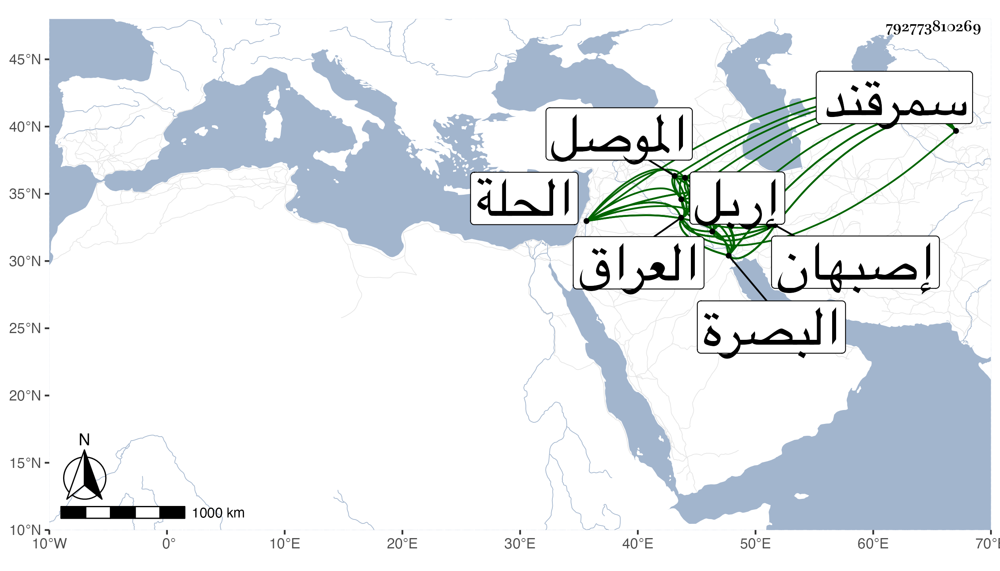

0902Sakhawi.DawLamic.ITO20230111-ara1.EIS1600.792773810269
Biography ID: 792773810269
611
حسين بن علاء الدين بن أحمد بن أويس . قال شيخنا في أنبائه آخر ملوك العراق من ذرية أويس كان اللنك أسره وأخاه حسنا وحملهما إلى سمرقند ثم أطلقا فساحا في الأرض فقيرين مجردين فأما حسن فاتصل بالناصر فرج وصار في خدمته ومات عنده قديما وأما هذا فتنقل في البلاد إلى أن دخل العراق فوجد شاه محمد بن شاه ولد بن أحمد بن أويس وكان أبوه صاحب البصرة فمات فملك ولده شاه محمد فصادفه حسين وقد حضره الموت فعهد إليه بالمملكة فاستولى على البصرة وواسط وغيرهما ثم حاربه أصبهان شاه بن قرا يوسف فانتمى حسين إلى شاه رخ بن اللنك فتقوى بالانتماء إليه وملك الموصل واربل وتكريت وكانت مع قرا يوسف فقوى أصبهان شاه يوسف واستنقذ البلاد ، وكان يخرب كل بلد ويحرقه إلى أن حاصرها حسينا بالحلة منذ سبعة أشهر ثم ظفر به بعد أن أعطاه الأمان فقتله خنقا في ثالث صفر سنة خمس وثلاثين وهو في عقود المقريزي فقال ابن علاء الدولة وترجمه .
